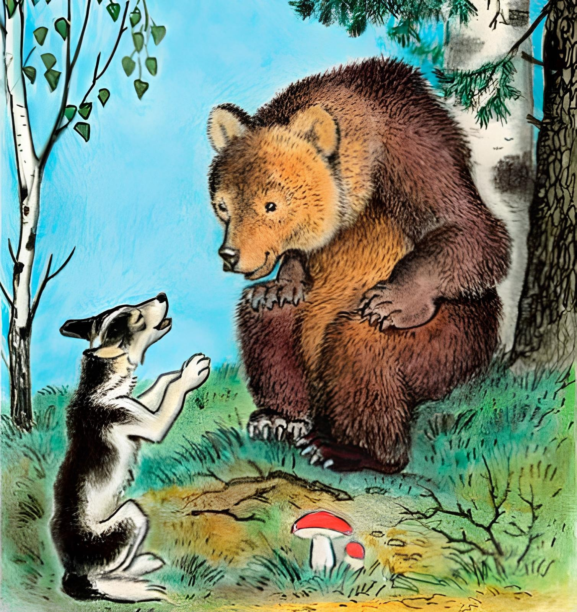
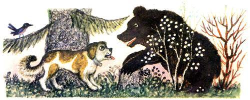
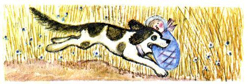

Полкан и медведь

Было это ещё в старое недоброе время.
Всю свою жизнь прослужил богатому хозяину старый пёс Полкан: двор стерёг и с хозяйскими ребятишками по улице бегал. Бывало, начнут ребятишки Полкана за хвост теребить: больно Полкану, а Полкан терпит. Знает, что малые ребята – несмышлёныши.
Служил Полкан, пока старость не пришла. И слышать стал плохо Полкан, и зубы притёрлись. Стал хозяин на Полкана покрикивать, стал куском хлеба попрекать, а потом и совсем со двора прогнал.
Пошёл Полкан в лес, куда глаза смотрят, куда ноги несут. «Как-нибудь,– думает, – проживу в лесу со зверями».
Забрёл как-то Полкан в тёмный лес, в густую чащобу.
А проходил глухими местами медведь Михайло Иванович. Почуял медведь пёсий дух, заглянул в чащобу. Смотрит: под деревом голодный пёс Полкан лежит.

– Ты как, Полканушка, к нам в тёмный лес пожаловал?
– Ах, Михайло Иванович, – отвечает Полкан, - не думал, не гадал я в лес уходить, да нужда погнала. Выгнал меня со двора злой хозяин.
– Не горюй, Полканушка,– говорит медведь, – я научу тебя, что делать. Расскажи-ка мне, где у твоего хозяина бабы с ребятами рожь жнут.
Рассказал Полкан медведю, где бабы жнут.
– Слушай хорошенько да мотай на ус,– говорит медведь.- Пойдём мы в то поле, подкрадусь я к жницам тихонько, схвачу из люльки хозяйского ребёнка и унесу в лес. А ты меня догоняй. Отними ребенка и отнеси хозяйской жене. Сам увидишь, что потом будет.
Как сказал медведь, так всё и вышло. Подкрался медведь к жницам, ребёнка из люльки схватил — и скорей в лес! Увидели бабы медведя, серпы побросали, стали кричать:
– Ай-яй-яй! Ай-яй-яй! Медведь младенца унёс!
А медведя и след простыл.

Откуда ни возьмись, старый Полкан. Кинулся Полкан в лес за медведем. Отнял у медведя ребёнка, тихохонько принёс, положил перед хозяйской женой.
– Глядите, глядите, бабоньки!— закричали жницы. – Ведь это Полкан наш старый, он у медведя младенца отбил!..
Стали ласкать Полкана бабы, стали его хлебом кормить.
Привели бабы Полкана к хозяину на двор и говорят:
Прогнал ты Полкана со двора, а он твоего младенца
спас – отнял у медведя. Надо Полкана беречь и кормить.
Обрадовался хозяин. Дали Полкану мяса, дали молока. Стал Полкан жить-поживать. Живёт Полкан, вспоминает лесного друга, медведя: «Ну и медведь, ну и Михаиле Иванович! Вовек не забуду нашу крепкую дружбу!»